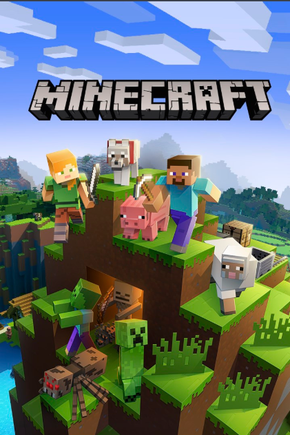
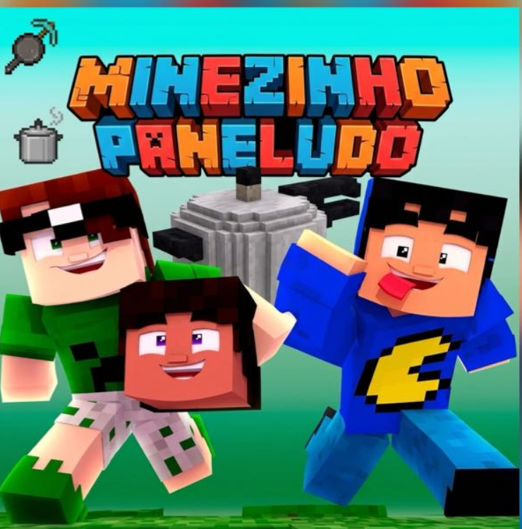

PODE ESTAR AQUI.PRESIDENTE + VICE
NOME DA CHAPA + SLOGAN
Chapa a anunciar
▧PresidenteA anunciar
Vice-presidenteA anunciar
SloganA anunciar
Pôster e plano de governo aguardando divulgação.
O próximo capítulo do servidor está nas suas mãos.
Explore as propostas, conheça as chapas e ajude
a construir o futuro da nossa comunidade.

BIOMA: DEMOCRACIA 🌱Construções gigantes. Ideias maiores ainda.
Agora é hora de construir juntos o próximo
capítulo do servidor.

LOADING NEXT CHAPTER… ■ ■ ■ □ □✦As inscrições estão abertas até 24/10/2026, às 23h.
Cada chapa terá seu pôster e um botão
para conhecer as propostas do plano de governo.
PresidenteA anunciar
Vice-presidenteA anunciar
SloganA anunciar
Pôster e plano de governo aguardando divulgação.
PresidenteA anunciar
Vice-presidenteA anunciar
SloganA anunciar
Pôster e plano de governo aguardando divulgação.
MURAL EM PREPARAÇÃO • Os espaços são reservados, não são candidaturas confirmadas. Novas chapas poderão ser adicionadas.
VER REGRAS DE INSCRIÇÃO ↗Quer propor leis, definir grandes construções
e guiar o servidor? Envie o pôster e as propostas
no grupo até 24/10/2026, às 23h.
Horário de Brasília (UTC−3). Inscrição pelo grupo do servidor.
Toda candidatura deve ter 1 presidente e 1 vice-presidente. Não se governa sozinho!
Envie no grupo um cartaz com foto ou skin do presidente e do vice, nome da chapa e slogan.
Apresente um plano de governo com no mínimo 3 propostas principais para o servidor.
É proibido griefar, roubar, explodir a base ou colocar lava na casa de chapas adversárias durante o período eleitoral. Vandalismo gera desqualificação imediata.
Haverá um debate. Data e horário ainda serão definidos. A participação dos candidatos é de extrema importância.
Reserve o dia: 20/11/2026.
A votação acontece durante todo o dia.
O futuro do servidor passa por você.
FALTA PARA O DIA DA VOTAÇÃO
Prazo final: 23h de 24/10/2026. Envie pôster e propostas no grupo.
O debate presidencial terá data e horário anunciados pela organização.
20/11/2026, durante todo o dia. Das 00h às 23h59, no horário de Brasília.
Entre com Microsoft somente ao acessar a área do voto. Informe o nome pelo qual a galera te conhece. Um voto por conta, em 20/11/2026.
Envie no grupo do servidor o pôster oficial e pelo menos 3 propostas até 24/10/2026, às 23h. O cartaz deve incluir presidente e vice (skin ou foto real), nome da chapa e slogan.
A lista de jogadores aptos a votar será definida pela organização do servidor e anunciada aqui antes da eleição.
Sim. A candidatura deve obrigatoriamente ser formada por 1 presidente e 1 vice-presidente. O pôster deve mostrar os dois, além do nome da chapa e do slogan.
Ao clicar em Votar, entre com sua conta Microsoft e informe seu nome. No dia 20/11, escolha a chapa e confirme. Cada conta pode votar uma única vez, mesmo que o nome seja alterado. A organização pode invalidar votos com motivo registrado; a chapa escolhida não aparece no painel de conferência.
A votação acontece em 20/11/2026, durante todo o dia. A data da apuração e da divulgação do resultado ainda será anunciada pela organização.